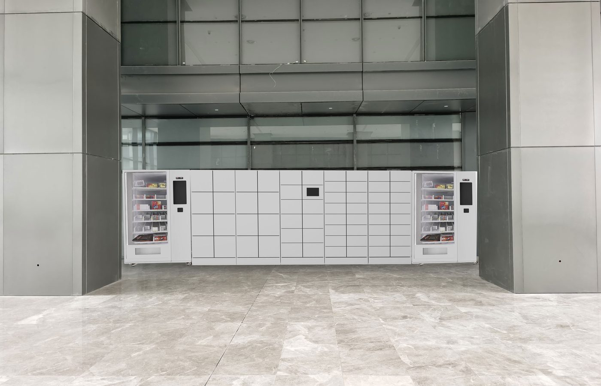
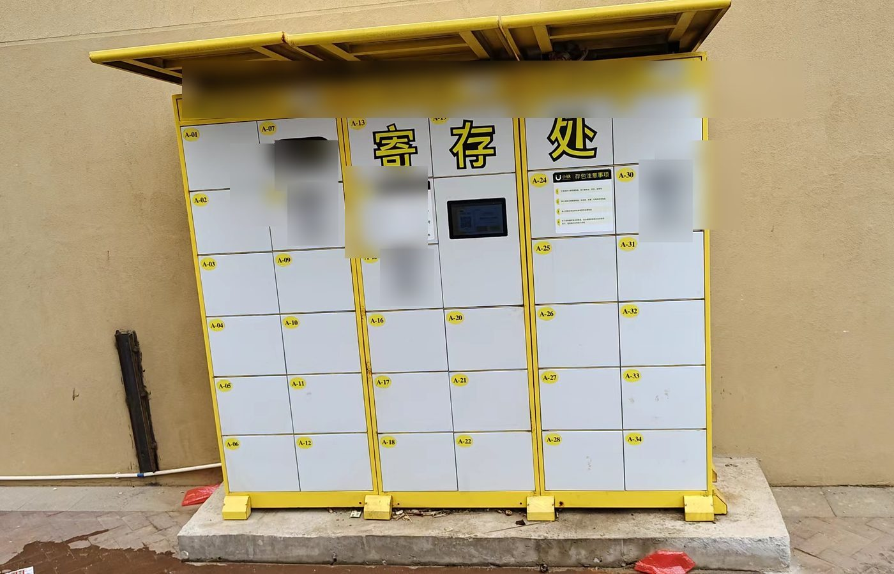

Positioning
我适合解决什么问题
我适合处理智能硬件项目里那些已经在现场反复发生、但还没有被软件系统稳定接住的问题：用户操作、设备状态、权限边界、线下交接、异常处理和后台运营。我会先把问题放回真实场景里看，再把角色、流程、规则、状态和责任整理清楚，推进成可开发、可运营、可验收的方案。
Product Thinking
产品思考
我不是一开始就会做产品的人。以前我很容易急着给答案，后来慢慢把这种习惯转成一套更克制的产品判断：先找到真实场景，再判断系统是否真的需要增加入口、状态、角色和规则，最后把风险、成本和业务阶段摊开做取舍。
Capability Model
能力模型
这些是我在不同项目里反复使用的工作能力。
设备服务体验设计
设计用户从申请、扫码、鉴权、控制设备、接收通知到异常处理的完整路径，让硬件服务可理解、可完成。
设备状态与权限规则
处理设备在线、柜门占用、库存口径、角色权限、访客权限、超时释放等复杂状态和边界。
软硬件一体交付
能在软件、硬件、实施、客户系统之间拆清边界，推动需求评审、联调、验收和上线。
平台化沉淀能力
从单个客户项目中抽象出可复用流程、后台配置、状态模型和异常规则，降低后续交付成本。
Selected Cases
精选案例

已上线 / 智慧行政 / 智能柜软件系统
理想全国职场无人前台 + 智能办公用品领用柜
把办公用品领用、物品暂存、交接、借还和拾物招领等行政服务，重构为 H5、柜机终端、PC 后台和智能柜协同的自助闭环。

开发中 / C 端设备服务 / 平台化整合
小铁 & 无忧存 C 端合并
在保留柜机现场交易链路的前提下，统一找点、下单、查订单和求助体验，避免多入口、多订单和多套运营口径继续割裂。

智能硬件补充 / 交付管理 / 企业办公
安克储物柜及耗材管理项目
补充展示短周期设备交付、现场协同、风险识别和企业办公储物/耗材管理的软件方案能力。
工业场景 / RFID / 资产管理
沃尔核材模具资产管理柜
接入工单、权限、RFID 识别、借还记录、模具寿命和维修闭环，补充展示工业设备管理场景。
Project Bank
项目库
Experience
经历主线
从早期产品规划，到内容生态工具，再到智能柜、IoT 设备和现场交付，能力重心逐步从“把需求做出来”走向“把真实现场问题转成可上线的软件产品方案”。
- 深圳市沐腾科技有限公司 产品 / 项目经理，负责智能柜、IoT 设备服务软件与多项目交付。
- 北京中软国际科技服务有限公司 产品策划，参与微信游戏生态内容任务、运营工具与增长项目。
- 蓝亚信息技术有限公司 产品经理，负责早期产品规划、原型和需求落地。